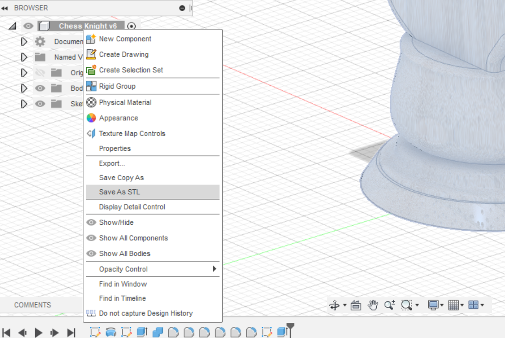
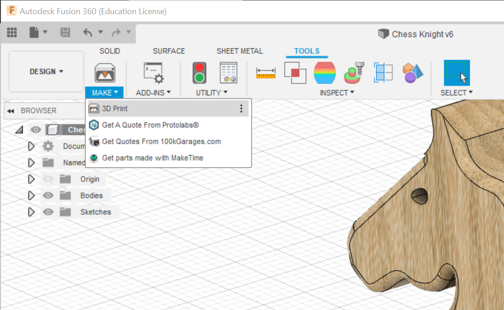
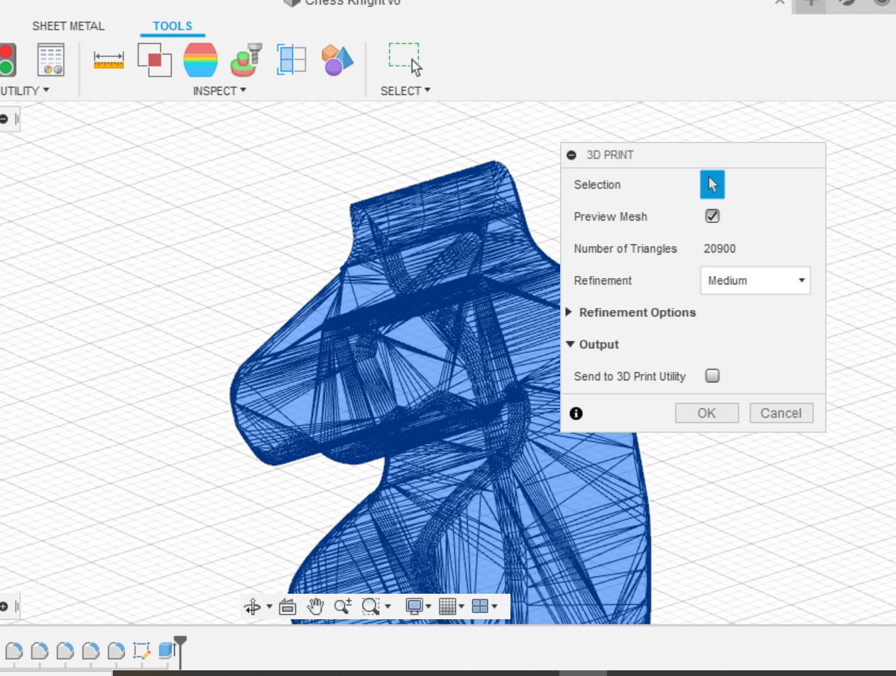
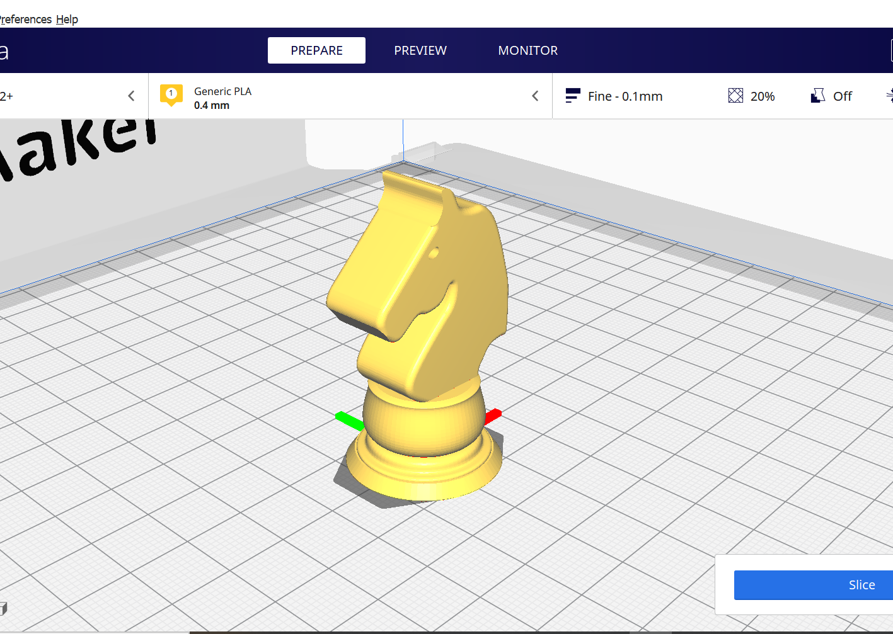

3D Printing
What is 3D printing?
3D Printing is a type of additive manufacturing where you can create a three dimensional object using a three dimensional model. It is an innovative technology developed by inventor Chuck Hull in the 1980s. To date there a may types of 3D printing techniques such as
- Fused Filament Fabrication (FFF)
- Stereolithography (SLA)
- Selective Laser Sintering (SLS)
- Fused Deposition Modeling (FDM)
- Digital Light Synthesis (DLS)
- Electron Beam Melting (EBM)
Since in this module, I will be using mostly FFF 3D printers. FFF 3D Printers can print in 2 ways; either Cartesian or Delta.

Before 3D printing, first we have to convert the CAD design to a STL file.

Secondly, we make our CAD object into a 3D print. To do this, we go to Tools> Make> 3D Print.

The end result will look like this →

Next, we have to use a slicer software A slicer software is a software which gives specific instructions from the STL file to the FFF 3D printer how to print the 3D object. The instructions given to the printer comes in the form of G-code which is a CNC programming language. One of the popular slicing softwares is Ultimaker Cura. Click here to download Ultimaker Cura
Once the software is set up, make sure to choose Ultimaker 2+ as the printer. Import your STL body into the software. Adjust your settings according to your preference. And then press slice to start slicing the object.
